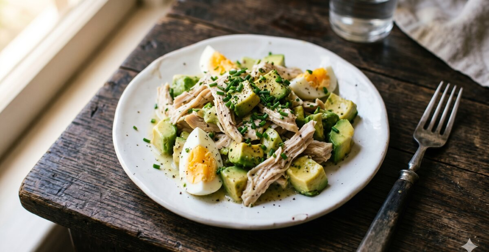
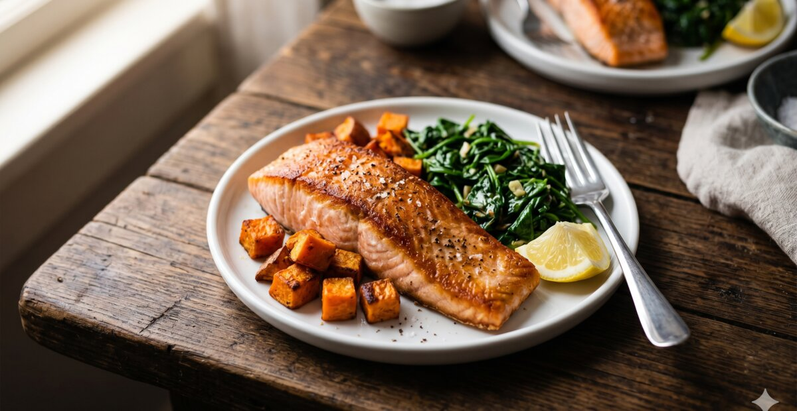
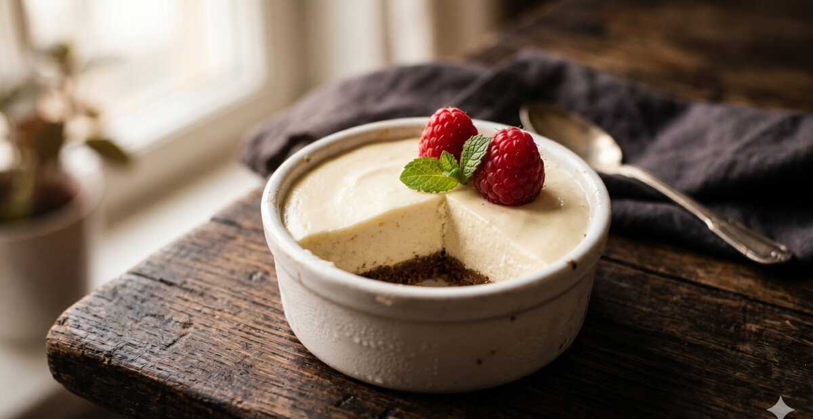
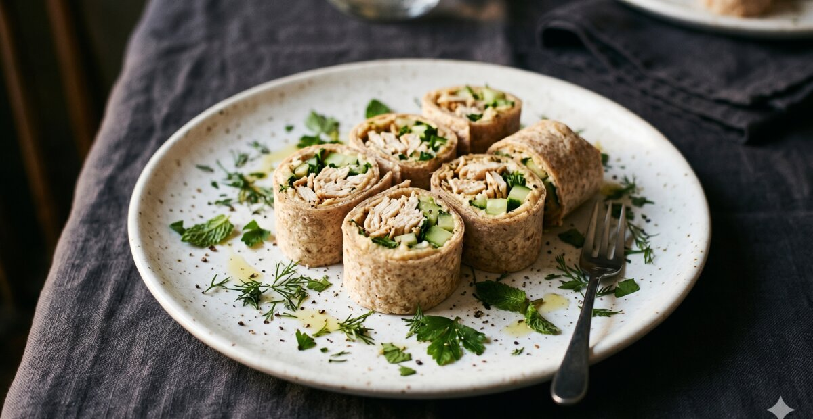
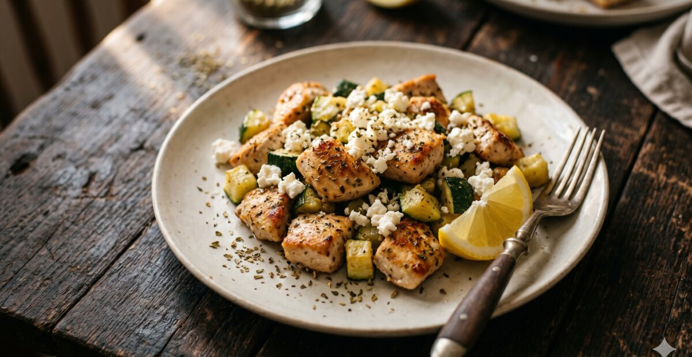
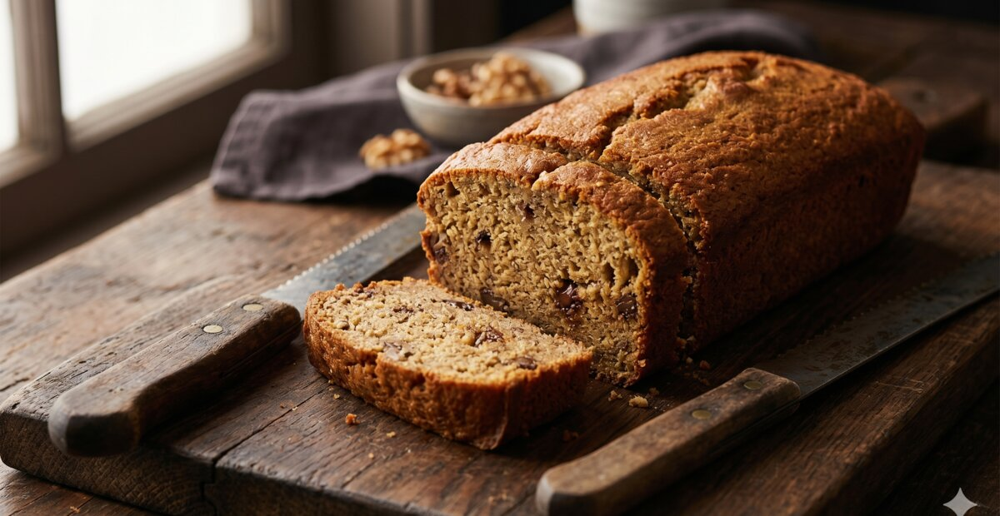
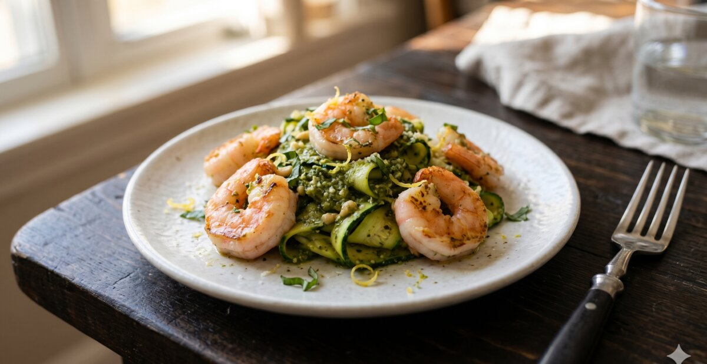
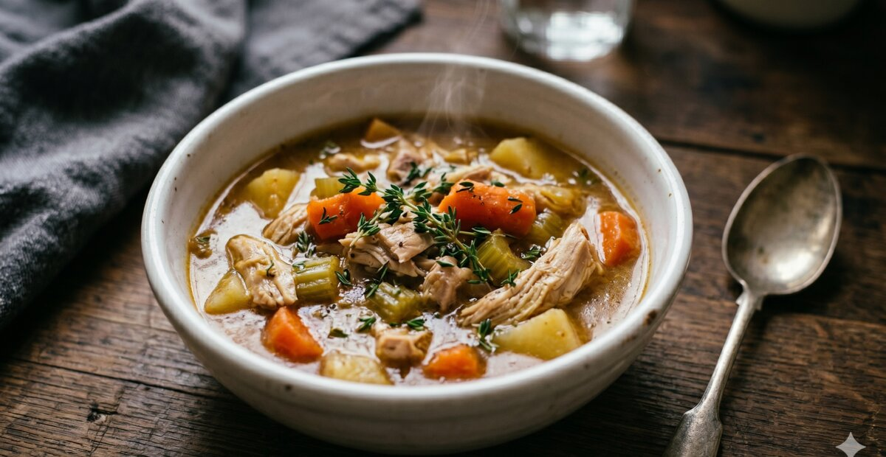
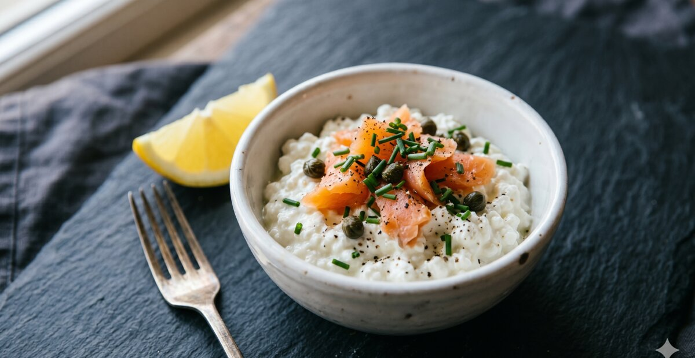
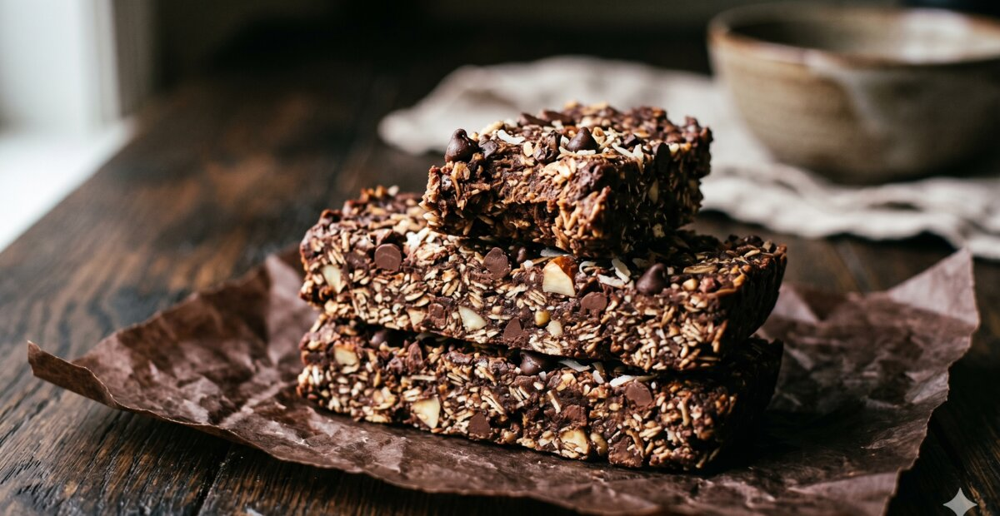

🥗 Vaste voeding: na week 6 na de operatie
In fase 4 mag je voorzichtig terugkeren naar vaste voeding. Focus op eiwitrijke maaltijden in kleine porties, goed kauwen en stoppen bij het eerste volheidsgevoel. Raadpleeg altijd je bariatrisch team voor persoonlijk advies.
In fase 4 na je maagverkleining mag je voorzichtig beginnen met vaste voeding. Dat klinkt als vrijheid, maar het vraagt ook om bewuste keuzes. Je maag is nog klein, dus eiwit eerst is het uitgangspunt bij elke maaltijd. Kauw goed, eet langzaam en stop zodra je het eerste verzadigingssignaal voelt.
De recepten op deze pagina zijn allemaal geschikt voor vaste voeding na een sleeve of gastric bypass. Ze zijn eiwitrijk, zacht genoeg om goed te kauwen en gebaseerd op ervaringen van David Gans en de Bari Community. Van een snel ontbijt zoals de chocolade havermout tot een volwaardige avondmaaltijd zoals de kip tikka masala.
Nieuw bij vaste voeding? Begin met zachte varianten zoals de griekse kwark bowl of de eiwitrijke kippensoep. Bouw rustig op en kijk hoe jouw maag reageert. Elk lichaam is anders, en dat geldt zeker na een maagverkleining.

Chocolade havermout met peer & pindakaas
Warme havermout met cacaopoeder, peer en pindakaas. 28g eiwit per portie, community-recept van Simone.

Courgettini met avocadopesto en kip
Courgetti met romige avocadopesto en kip. Gezond alternatief voor pasta na maagverkleining.

Eiwitrijke brownie met kidneybonen
Chocolade brownie van kidneybonen. Suikervrij, eiwitrijk en verrassend lekker.

Eiwitrijke kippensoep
Dikke, voedzame kippensoep met groente. 28g eiwit per kom, verwarmend en makkelijk te maken.

Gevulde paprika met cottage cheese en tonijn
Gevulde paprika als lunch of diner. 30g eiwit, geen koolhydraten en klaar in 15 minuten.

Griekse kwark bowl
Snelle kwark bowl als eiwitrijk ontbijt. 25g eiwit, klaar in 3 minuten. David's dagelijkse ontbijt.

High-protein overnight oats
Overnight oats met hoog eiwitgehalte. De avond ervoor maken, 's ochtends direct eten.

Kip tikka masala
Zachte kip tikka masala in kleine portie. 36g eiwit, mild gekruid.

Kipgehaktballetjes in tomatensaus
Zachte kipgehaktballetjes in tomatensaus. Hoog in eiwit, makkelijk verteerbaar.

Proteïne pannenkoeken
Eiwitrijke pannenkoeken in kleine porties. 28g eiwit, zonder suiker. David's favoriete weekendontbijt.

Zalm met spinazie en ricotta
Gebakken zalm met romige spinazie en ricotta. Hoog in eiwit en omega-3. Klaar in 20 minuten.

Kipsalade met avocado en ei
Zachte kipsalade met avocado en ei. 32g eiwit, klaar in 15 min.

Zalm met zoete aardappel
Zalm met zoete aardappel en spinazie. 36g eiwit, vol omega-3.

Kwark cheesecake zonder suiker
130 kcal, 12g eiwit, geen suiker. David's zoete go-to snack.

Wrap met kip en hummus
Kleine wrap met kip en hummus. 34g eiwit, ideale werklunch.

Griekse kip met feta
Mediterrane kip met feta en courgette. 38g eiwit, vol smaak.

Eiwitrijk bananenbrood
Low-carb bananenbrood met amandelmeel. 10g eiwit per plakje.

Garnalen met courgettilint
Garnalen met courgettilint en pesto. 30g eiwit, glutenvrij.

Kipstoofpotje met wortels
Kip valt uit elkaar na 30 min. 34g eiwit, makkelijk in te vriezen.

Cottage cheese met gerookte zalm
28g eiwit, 5 minuten, geen koken. Favoriete werklunch van David.

No-bake eiwitrepen
8 repen op zondag gemaakt voor de hele week. 11g eiwit per reep.